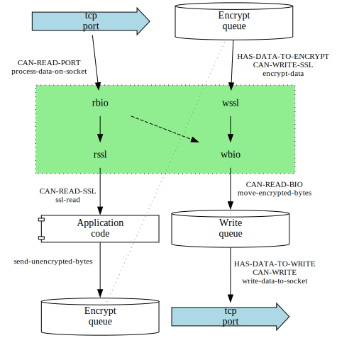

Experiments with HTTP/2 server
Table of Contents
- 1 Generic server interface
- 2 Implementations
- 3 Work with octets
- 4 HTTP/2 protocol.
- 5
TLSwith CL+SSL - 6 Synchronous implementations
- 7 Server built using HTTP2 package.
- 8 CL-ASYNC based implementation (asynchronous)
- 9 Asynchronous
TLSserver - 10 New locatives
- 11 Packages
- 12 Experiments
[in package TLS-SERVER]
I wanted to play with different options for HTTP/2 server implementations. While I have a more correct implementation of HTTP/2, I wanted something simple to test different client handling options, as well as speed limits and impact of different choices.
So this repository implements:
very simplified (and indeed incorrect in more than few ways) server side of HTTP/2 protocol, and based of that
several versions of TCP server that accept and handle the request.
1 Generic server interface
The functions below implement server creation on an abstract level. Individual server types implement appropriate methods to ensure desired behaviour.
[function] CREATE-SERVER PORT TLS DISPATCH-METHOD &REST KEYS &KEY (HOST "127.0.0.1") (ANNOUNCE-URL-CALLBACK (
CONSTANTLYNIL)) &ALLOW-OTHER-KEYSCreate a server on
HOSTandPORTthat handles connections (possibly withTLS) usingDISPATCH-METHOD.ANNOUNCE-URL-CALLBACKis called when server is set up on the TCP level and receives one parameter,URLthat server listens on. The idea is to be able to connect to server whenPORTis 0, that is, random port.Establishes restart
KILL-SERVERto close the TCP connection and return.Calls
DO-NEW-CONNECTIONto actually handle the connections after the callback returns This function also receives the listening socket adTLSandDISPATCH-METHODas parameters.
[generic-function] DO-NEW-CONNECTION LISTENING-SOCKET TLS DISPATCH-METHOD &KEY ((:NAGLE TLS-SERVER/ASYNC/TLS::*NAGLE*))
This method is implemented for the separate connection types. It waits on new (possibly tls) connection to the
LISTENING-SOCKETand start handling it usingDISPATCH-METHOD.See Implementations for available
DISPATCH-METHOD.TLSis eitherNILor:TLS. Note that when using HTTP/2 withoutTLS, most clients have to be instructed to use tls - e.g., --http2-prior-knowledge for curl.Raise
UNSUPPORTED-SERVER-SETUPif there is no relevant method.
[restart] KILL-SERVER &OPTIONAL VALUE
Restart established in
CREATE-SERVERthat can be invoked to terminate the server properly and returnVALUE.
[function] KILL-SERVER &OPTIONAL RESULT
Kill server by invoking
KILL-SERVERrestart, if it exists.
[restart] KILL-PARENT &OPTIONAL VALUE
Restart established in
CREATE-SERVERthat TODO
[restart] GO-AWAY &OPTIONAL VALUE
Handler to be invoked to close HTTP connection from our side.
It is established either in
TLS-SERVER/SYNCHRONOUS:DO-CONNECTION.TODO: Should we have it in async-cffi loop as well?
[function] CALLBACK-ON-SERVER FN &KEY (THREAD-NAME "Test client for a server")
Return a function that takes one parameter,
URL, as a parameter and callsFNon it in a separate thread. Then it kills the server by invokingKILL-SERVERrestart.This is to be used as callback on an open server for testing it.
[function] URL-FROM-SOCKET SOCKET HOST TLS
Return
URLthat combinesHOSTwith the port of theSOCKET.This is to be used as callback fn on an open server for testing it.
[function] URL-FROM-PORT PORT HOST TLS
Return
URLthat combinesHOSTwith the port of theSOCKET.This is to be used as callback fn on an open server for testing it.
[variable] *BUFFER* NIL
Preallocated buffer for reading from stream. This is initialized for each connection depending on the dispatch method.
2 Implementations
Following implementations are defined:
[method] DO-NEW-CONNECTION LISTENING-SOCKET TLS (DISPATCH-METHOD (
EQL(01):NONE))Handle the connection while doing nothing else.
Serve just one client at time: when it connects, read the incoming requests and handle them as they arrive. When the client sends go-away frame, close the connection and be ready to serve another client.
Obviously, there is little overhead and this version is actually pretty fast - for one client and in ideal conditions (especially with request pilelining).
[method] DO-NEW-CONNECTION LISTENING-SOCKET TLS (DISPATCH-METHOD (
EQL(01):THREAD))Handle the connection in a new dedicated thread. This is a method that is used, e.g., by Hunchentoot.
[method] DO-NEW-CONNECTION LISTENING-SOCKET TLS (DISPATCH-METHOD (
EQL(01):NONE/HTTP2))Handle the connection while doing nothing else using HTTP2 asdf library for actual work. Otherwise it is same as the
:NONEmethod (i.e., serving a single client at time).
[method] DO-NEW-CONNECTION SOCKET (TLS (
EQL(01)NIL)) (DISPATCH-METHOD (EQL(01):ASYNC))Handle new connections using cl-async event loop.
Pros: This version can be run in one thread and process many clients.
Cons: requires a specific C library, and the implementation as-is depends on SBCL internal function - we re-use the file descriptor of socket created by usocket package, as otherwise access to the port of server is complicated.
[method] DO-NEW-CONNECTION SOCKET (TLS (
EQL(01):TLS)) (DISPATCH-METHOD (EQL(01):ASYNC))Handle new connections using cl-async event loop.
Pros: This version can be run in one thread and process many clients.
Cons: requires a specific C library, and the implementation as-is depends on SBCL internal function - we re-use the file descriptor of socket created by usocket package, as otherwise access to the port of server is complicated.
[method] DO-NEW-CONNECTION SOCKET (TLS (
EQL(01):TLS)) (DISPATCH-METHOD (EQL(01):ASYNC-CUSTOM))Handle new connections by adding pollfd to and then polling.
When poll indicates available data, process them with openssl using BIO. Data to the client are sent to SSL to BIO to socket buffer (and again poll to write them).
This in the end does not use usocket, async nor cl+ssl - it is a direct rewrite from C code.
3 Work with octets
[in package TLS-SERVER/UTILS]
Simplify work with octet vectors
[type] OCTET-VECTOR
Simple (i.e., not adjustable and w/o fill pointer) one-dimensional array of octets
[function] OCTETIZE ARRAY
Make a simple one-dimensional array of octets with same content as
ARRAY.
[function] FULLY-READ-ARRAY STREAM VECTOR TO-READ
Read
TO-READoctets to the octetVECTOR.Lisp standard says that read-sequence returns less than required bytes only on EOF, and we rely on that; if this happens, invoke
GO-AWAYrestart.
4 HTTP/2 protocol.
[in package TLS-SERVER/MINI-HTTP2]
Simplified - and incorrect in many corner cases - HTTP/2 protocol implemented here is is as follows. This should be sufficient to respond to a browser, curl or h2load.
[variable] +CLIENT-PREFACE-START+ #(80 82 73 32 42 32 72 84 84 80 47 50 46 48 13 10 13 10 83 77 13 10 13 10)
Clients send 24 octets of
+CLIENT-PREFACE-START+, which in hex notation is this. That is, the connection preface starts with the string "PRI * HTTP/2.0\r\n\r\nSM\r\n\r\n".
[constant] +CLIENT-PREFACE-LENGTH+ 24
Length of the client preface.
[function] READ-CLIENT-PREFACE STREAM
Read the client preface from a stream and verify it.
Signal
CLIENT-PREFACE-MISMATCHon mismatch.
[constant] +GOAWAY-FRAME-TYPE+ 7
When client is done (or after an error) it sends goaway frame, and both client and server terminate the connection socket. This is kind of courtesy, and any side should be ready for the other side terminating connection without goaway frame.
Server can send goaway frame as well, but our servers do not.
[generic-function] MAYBE-ADD-TLS SOCKET TLS
Return either plain (if tls is nil) or
TLS(if :tls) Lisp stream build uponSOCKETstream.This is used by implementation that use usocket sockets.
[function] BUFFER-WITH-CHANGED-STREAM BUF STREAM-ID &OPTIONAL (START 0)
Change stream id of a frame in
BUFtoSTREAM-ID.
[function] SEND-RESPONSE STREAM STREAM-ID
Write response to the request with
STREAM-IDto Common Lisp outputSTREAM.
4.1 Prebuild frames
[variable] *SETTINGS-FRAME* #(0 0 0 4 0 0 0 0 0)
After client preface, both client and server send their settings frame (
*SETTINGS-FRAME*). The frame here is empty settings frame.
[variable] *ACK-FRAME* #(0 0 0 4 1 0 0 0 0)
Settings frame should be acknowledged by sending
*ACK-FRAME*(type+flag)
[variable] *DATA-FRAME* #(0 0 12 0 1 0 6 254 159 72 101 108 108 111 32 87 111 114 108 100 10)
Server replies to header frame with header and data frames with same stream ID. The data frame here is a data frame with zero stream ID (to be patched before sending) and payload short ASCII text from result-text.
- [variable] *HEADER-FRAME* #(0 0 11 1 4 0 6 254 159 136 15 16 135 73 124 165 137 211 77 31)
4.2 Header parsing
[type] STREAM-ID
Client sends HTTP2 requests as a headers (and possibly data) frame, with last packet having END-OF-HEADERS flag particular stream. Each stream is a 23 bit integer.
[type] FRAME-SIZE
Frame size parameter can be 32 bits long; however, values above 2^14 are an error.
Following function extract appropriate parameter from the header.
- [function] GET-STREAM-ID HEADER
- [function] GET-FRAME-TYPE HEADER
- [function] GET-FRAME-FLAGS HEADER
[function] GET-FRAME-SIZE HEADER
Get frame size of a frame from frame header.
[function] GET-STREAM-ID-IF-ENDS HEADER
Stream id when header closes the stream on client side. Nil otherwise.
4.3 Error conditions
- [condition] CLIENT-PREFACE-MISMATCH ERROR
5 TLS with CL+SSL
[in package TLS-SERVER/MINI-HTTP2]
HTTP/2 in most cases needs TLS as an underlying layer.
We use MAKE-HTTP2-TLS-CONTEXT to prepare a context that is later stored in
*HTTP2-TLS-CONTEXT* to have (some) parameters set up properly
Servers using usocket and Lisp streams use WRAP-TO-TLS to establish TLS.
[function] MAKE-HTTP2-TLS-CONTEXT
make a TLS context suitable for http2.
practically, it means:
ALPN callback that selects h2 if present,
do not request client certificates
do not allow ssl compression adn renegotiation. we should also limit allowed ciphers, but we do not.
[function] WRAP-TO-TLS RAW-STREAM
Return a binary stream representing
TLSserver connection overRAW-STREAM.Use
TLSKEY and CERT for server identity, and*HTTP2-TLS-CONTEXT*for the contex.This is a simple wrapper over CL+SSL.
[variable] *HTTP2-TLS-CONTEXT* #.(SB-SYS:INT-SAP #X7F14641304D0)
TLScontext to use for our servers.
[callback] SELECT-H2-CALLBACK SSL OUT OUTLEN IN INLEN ARGS
To be used as a callback in ssl-ctx-set-alpn-select-cb.
Chooses h2 as ALPN if it was offered, otherwise the first offered.
This is basically reimplemented
SSL_select_next_proto, but easier than to use that one in ffi world.
6 Synchronous implementations
[in package TLS-SERVER/SYNCHRONOUS]
Simplest implementation is a single thread that reads and handles the requests. Once the request from a client is received, this client is listened to until finished, and then can next client connect.
Obviously not ideal, but simple.
[method] DO-NEW-CONNECTION LISTENING-SOCKET TLS (DISPATCH-METHOD (
EQL(01):NONE))Handle the connection while doing nothing else.
Serve just one client at time: when it connects, read the incoming requests and handle them as they arrive. When the client sends go-away frame, close the connection and be ready to serve another client.
Obviously, there is little overhead and this version is actually pretty fast - for one client and in ideal conditions (especially with request pilelining).
Another implementation is a thread for the listener, and new thread for each client. Now this is used by Hunchentoot and other non-lisp implementations, and works quite well under many conditions.
This version has supposedly disadvantage when there are too many clients/threads (RAM for threads needed, etc).
The speed for single client is comparable to the single-client version.
Also, this version (as well as the single client one) can be ported to most CL implementations, as it uses standard libraries - bordeaux-threads, cl+ssl and usocket.
[method] DO-NEW-CONNECTION LISTENING-SOCKET TLS (DISPATCH-METHOD (
EQL(01):THREAD))Handle the connection in a new dedicated thread. This is a method that is used, e.g., by Hunchentoot.
[function] DO-CONNECTION STREAM
Process a HTTP2 connection naively: handle preface, and read frames till there is end of stream; write static response in that case.
Terminate if either SSL error occurs, or
GO-AWAYrestart is invoked.
[restart] GO-AWAY &OPTIONAL VALUE
Handler to be invoked to close HTTP connection from our side.
It is established either in
TLS-SERVER/SYNCHRONOUS:DO-CONNECTION.TODO: Should we have it in async-cffi loop as well?
7 Server built using HTTP2 package.
[in package TLS-SERVER/MINI-HTTP2]
Server implementations so far used the simplified HTTP/2 protocol described above. Now we do the same using HTTP2, still synchronously to compare the ease of implementation and speed.
[method] DO-NEW-CONNECTION LISTENING-SOCKET TLS (DISPATCH-METHOD (
EQL(01):NONE/HTTP2))Handle the connection while doing nothing else using HTTP2 asdf library for actual work. Otherwise it is same as the
:NONEmethod (i.e., serving a single client at time).
8 CL-ASYNC based implementation (asynchronous)
[in package TLS-SERVER/ASYNC]
[method] DO-NEW-CONNECTION SOCKET (TLS (
EQL(01)NIL)) (DISPATCH-METHOD (EQL(01):ASYNC))Handle new connections using cl-async event loop.
Pros: This version can be run in one thread and process many clients.
Cons: requires a specific C library, and the implementation as-is depends on SBCL internal function - we re-use the file descriptor of socket created by usocket package, as otherwise access to the port of server is complicated.
- [function] RUN-UV-SERVER &KEY (PORT 2022)
9 Asynchronous TLS server
[in package TLS-SERVER/ASYNC/TLS]
[class] CLIENT STRUCTURE-OBJECT
Data of one client connection. This includes:
File descriptor of underlying socket (FD),
Opaque pointer to the openssl handle (
SSL),Input and output
BIOfor exchanging data withOPENSSL(RBIO,WBIO),Unencrypted octets to encrypt and send (
WRITE-BUF),Encrypted octets to send to the file descriptor (
ENCRYPT-BUF),Callback function when read data are available (
IO-ON-READ).Number of octets required by
IO-ON-READ. Negative values have special handling.Client state from the low-level data flow point of view (
STATE)
9.1 Client actions loop
Each client has a STATE that encapsulates what actions are effectively possible.
SELECT-NEXT-ACTION selects appropriate action. When no new action is available,
next client is handled and eventually POLL called when all clients were served.
When POLL returns, new action is available for some client (read from a socket or write to it).
The actions are in general indicated by arrows in the diagram:

[function] PROCESS-CLIENT-FD FD-PTR CLIENT
Process events available on
FD-PTR(a pointer to struct pollfd) withCLIENT.The new possible action corresponding to ① or ⑥ on the diagram above is added to the client state and
DO-AVAILABLE-ACTIONSis called to react to that.
[function] DO-AVAILABLE-ACTIONS CLIENT
Run available actions as selected by
SELECT-NEXT-ACTIONtill there is none.
[function] SELECT-NEXT-ACTION CLIENT
One of possible next actions consistent with then the state of the client, or nil if no action is available.
This is factored out so that it can be traced. There is a
TLS-SERVER/MEASURE::ACTIONSclip on this function.
[function] PROCESS-DATA-ON-SOCKET CLIENT
Read data from client socket ① and pass them to the tls buffer ② to decrypt.
[function] SSL-READ CLIENT VEC SIZE
Move up to
SIZEoctets from the decryptedSSL③ to theVEC.Return 0 when no data are available. Possibly remove
CAN-READ-SSLflag.
[function] SEND-UNENCRYPTED-BYTES CLIENT NEW-DATA COMMENT
Collect new data to be encrypted and sent to client.
Data are just concatenated to the
ENCRYPT-BUF. Later, they would be encrypted and passed.
[function] ENCRYPT-DATA CLIENT
Encrypt data in client's
ENCRYPT-BUF.Do nothing if there is no data to encrypt or
SSLnot yet initialized (and return zero).Otherwise, use a temporary vector to write data
[function] MOVE-ENCRYPTED-BYTES CLIENT
Move data encrypted by OpenSSL to the socket write queue Ⓔ.
This should be called in a way friendly to Nagle algorithm. My understaning is this is either when we pipeline a lot of data, or when we send out somethinf that expects a response.
[function] WRITE-DATA-TO-SOCKET CLIENT
Write buffered encrypted data Ⓔ to the client socket ⑥. Update the write buffer to keep what did not fit.
9.2 HTTP2 handling
[function] MAKE-SSL-CONTEXT
Make a
SSLcontext for http2 server..This includes public and private key pair (from files in this directory),
Functionally, it is same as
TLS-SERVER/MINI-HTTP2:MAKE-HTTP2-TLS-CONTEXT; however, it used directly cffi and sets some parameters in a different way.
[function] MAKE-CLIENT-OBJECT SOCKET CTX S-MEM
Create new
CLIENTobject suitable forTLSserver.Initially, the ENCRYPT-BUFFER contains the settings to send, and next action is reading of client hello.
[function] PROCESS-CLIENT-HELLO CLIENT VEC
Check first received octets to verify they are the client hello string.
Next, read and process a header
- [function] PROCESS-HEADER CLIENT HEADER
- [function] IGNORE-BYTES CLIENT COUNT
- [function] PRINT-GOAWAY-FRAME CLIENT FRAME
10 New locatives
[in package TLS-SERVER/UTILS]
Define a locative to document CFFI callbacks.
[macro] DEFINE-DOCUMENTED-CALLBACK NAME RES-TYPE ARGS DOCSTRING &BODY BODY
Wrapper on
CFFI:DEFCALLBACKthat also tracks the args and docstrings.
[locative] CALLBACK
CFFI callback is a Lisp code that can be called from C.
11 Packages
[package] "TLS-SERVER"
Exports
CREATE-SERVER(needed to invoke a server),DO-NEW-CONNECTION(specialized to implement particular servers), and various restarts. See Generic server interface.Also holds the top-level documentation sections, Experiments with HTTP/2 server and
@OVERVIEW.
[package] "TLS-SERVER/UTILS"
Octet processing utilities. See Work with octets
[package] "TLS-SERVER/MINI-HTTP2"
Basic functionality for low-level HTTP2 implementation.
12 Experiments
12.1 Clips
[in package TLS-SERVER/MEASURE]
[clip] ACTIONS CLIENT RES
Collect client state and action (data movement) selected for execution into a separate clasp file, actions.clasp.
Class:
CLIP::FUNCTIONAL-COMPOSITE-INSTRUMENTATION